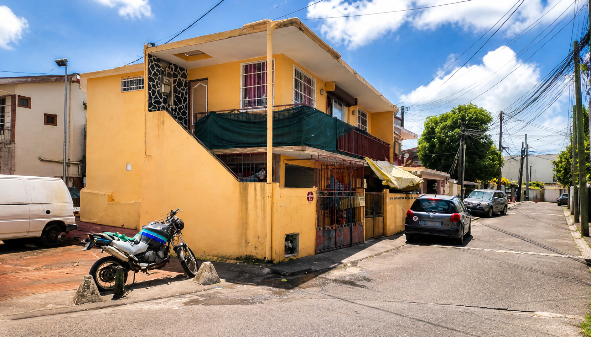
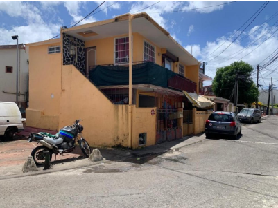
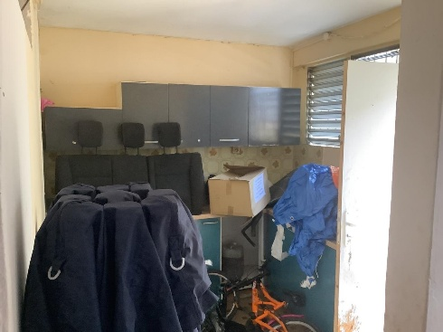
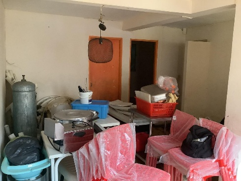
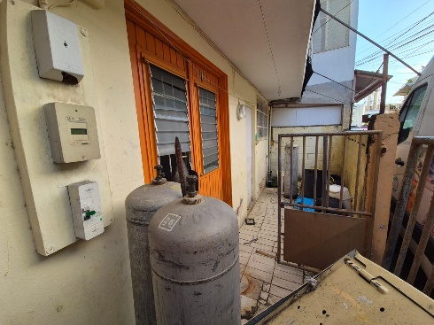
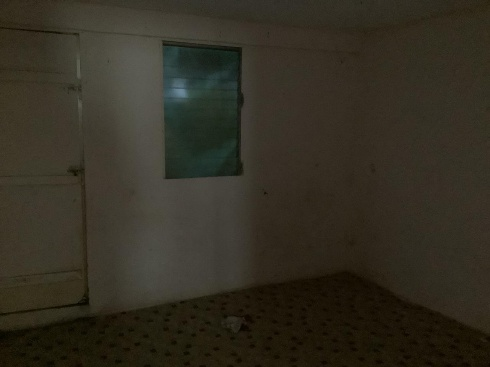

Patrimoine immobilier privé · Martinique
Construire un patrimoine, actif après actif.
M Patrimoine développe une vision immobilière simple : sélectionner des lieux, les faire évoluer avec soin et inscrire chaque projet dans une stratégie de long terme.
Découvrir le projet en cours
Fort-de-France · Martinique
Une trajectoire, pas une collection
Un parc immobilier se construit dans la durée.
Chaque bien constitue une étape. La priorité est donnée à une lecture attentive du lieu, à une transformation utile et à une gestion qui préserve la valeur dans le temps.
Cette première présentation pose le cadre d’une activité appelée à s’enrichir projet après projet.
Projet 01 · en préparation
Immeuble de rapport
à Fort-de-France.
Un premier actif composé de deux lots, pensé comme le point de départ d’un parc immobilier suivi dans le temps.

Étude et préparation des travaux
Le projet porte sur un immeuble à taille humaine, avec un premier travail consacré à la remise en valeur du T3 avant travaux.
- Localisation
- Fort-de-France
- Surface habitable
- 80 m²
- Configuration
- R+1 · 2 lots
- Année de construction
- 1965
Les informations de cette page présentent une trajectoire de projet. Les données juridiques et commerciales définitives seront ajoutées au moment approprié.
Transformation en cours de préparation
Le T3, avant les travaux.
Les premiers visuels documentent l’état actuel. Les images “après” seront ajoutées lorsque les travaux auront réellement commencé puis avancé.




Aucune image de projection n’est présentée comme un résultat réalisé.